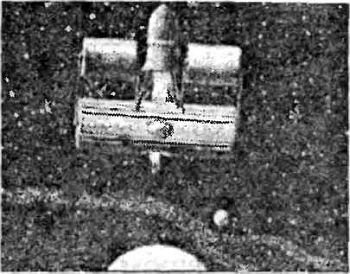
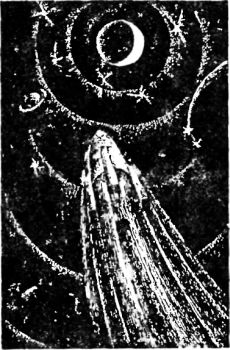
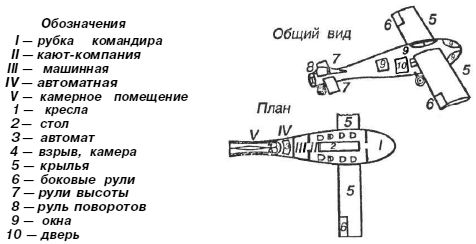
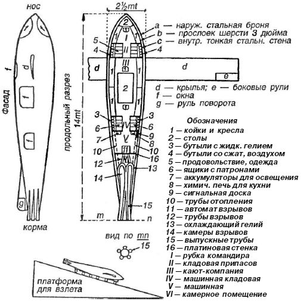
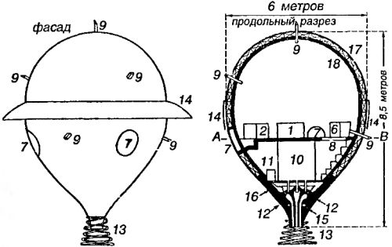
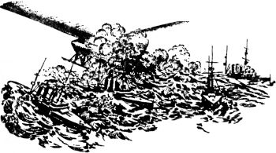

Межпланетные ракетные корабли
В самом начале XIX века в Париже жил мастеровой Клод Руджиери, итальянец по происхождению. В это время стали очень модными рассказы о запусках воздушных шаров и боевых ракетах Конгрева. Руджиери неплохо зарабатывал тем, что организовывал публичные зрелища, в которых мелкие животные — вроде мышей и крыс — поднимались в небо на пороховых ракетах и возвращались на землю живыми и здоровыми при помощи маленьких парашютов. Размеры и мощность ракет Клода Руджиери все увеличивались, и в один прекрасный день — это было в 1830 году — предприимчивый ремесленник объявил, что «большая комбинированная ракета поднимет в небо барана». Тут же появился некий юноша, который предложил себя вместо несчастного животного. И Руджиери, недолго думая, принял это предложение! Вполне возможно, что юный смельчак кончил бы тем же, чем и китайский мандарин Ван Гу, но тут в дело вмешалась полиция, запретившая необычное представление под страхом ареста талантливого мастерового.
Так, Франция стала первой страной в мире, где осуществлялись запуски «геофизических» ракет с подопытными животными. Оставалось сделать всего один шаг…
Мы помним, что уже к середине XIX века многие энтузиасты научно-технического прогресса заговорили о возможности использования реактивной тяги для нужд пассажирского и грузового транспорта. Разумеется, не обошли эту тему и литераторы. Большая часть из них, как мы увидели, полагала, что будущее за комбинированными реактивно-аэростатическими системами, — это было время паровых двигателей, а о ракетах на жидком топливе никто не мог даже мечтать. Например, Жюль Верн не рискнул описать космический полет на ракете, полагая, что для достижения Луны заряда ракеты недостаточно — куда проще и «эффективнее» запустить этот снаряд из пушки. Однако и он в романе «Вокруг Луны» (1870 год) приводит эпизод с применением тормозных ракет, которые первоначально планировалось использовать для мягкой посадки на Луну, но затем нужда заставила путешественников запустить эти ракеты для коррекции курса с целью возвращения на Землю.
Обратимся к тексту романа:
«…мощные ракеты, имея точкой опоры дно снаряда и вылетая наружу, должны были вызвать обратное действие снаряда и тем самым до некоторой степени замедлить скорость его падения. Правда, этим ракетам пришлось бы гореть в безвоздушном пространстве, но кислорода им хватило бы, потому что он заключался в самих ракетах. Ведь извержению лунных вулканов никогда не препятствовал недостаток атмосферы вокруг Луны.
Барбикен перед отъездом запасся ракетами в маленьких стальных цилиндрах с нарезкой, которые ввинчивались в дно снаряда. Изнутри они были заделаны в уровень с дном, а снаружи выступали на полфута. Их было двадцать штук. Специальное отверстие, проделанное в диске, позволяло зажечь фитили, которыми были снабжены ракеты. Самые взрывы ракет должны были произойти за пределами снаряда. Взрывчатая смесь была заблаговременно заложена в каждый цилиндр. Оставалось только вовремя вынуть металлические пробки, вставленные в дно снаряда, и вместо них ввинтить цилиндры с ракетами, плотно пригнанные к отверстиям. <…>
Ардан поднес зажженный фитиль к запальному шнуру, к которому были присоединены все ракеты. Из-за отсутствия воздуха детонации не последовало, но Барбикен увидел в окно пламя взрыва, которое очень скоро погасло.
Снаряд содрогнулся, и путешественников изрядно встряхнуло.
Трое друзей, безмолвные, еле переводя дыхание, напрягали все свое зрение, весь слух. Среди полной тишины казалось, что слышно,как бьются их сердца».
Разумеется, в реальности пороховые ракеты не сработали бы (объяснения Верна выглядят просто смехотворными), но само понимание серьезности проблемы (без окислителя не может быть горения, а значит, и реактивной тяги) создало известную почву для поиска решения.
С разницей в год на свет появились два человека, которым судьбой предначертано было стать предтечами космической эры для всего человечества. Звали их Герман Гансвиндт и Константин Циолковский.
О жизни и проектах Циолковского мы поговорим более подробно ниже (см. главу 3), а сейчас остановимся на Германе Гансвиндте, которого, на мой взгляд, совершенно незаслуженно забывают, когда речь заходит о пионерах ракетостроения.
Гансвиндт родился 12 июня 1856 года в небольшом городе в Восточной Пруссии. Он получил образование юриста, но предпочел полностью отдаться своему главному увлечению — конструированию различных средств передвижения. Он изобретал велосипеды, самодвижущиеся экипажи, моторные лодки и пожарные машины. Некоторые из его проектов остались на бумаге, но многие были осуществлены им самим.
Со временем Гансвиндт обратился к проблеме воздушного транспорта и начал (как и Циолковский) с дирижабля. Он разработал и запатентовал проект оригинального воздушною корабля длиной 150 метров и с паровым двигателем мощностью в 100 лошадиных сил. Уже тогда было понятно, что дирижабли незаменимы в военном деле, и в связи с этим Гансвиндт направил описание своего изобретения с приложением копий патента фельдмаршалу фон Мольтке. Ответ пришел очень быстро: Генеральный штаб «за неимением средств» отказывал Гансвиндту в осуществлении его проекта.
Параллельно Гансвиндт сконструировал и построил геликоптер, но не смог подобрать к нему двигатель нужной мощности.
Однако славу изобретателю принес совсем другой проект — космического корабля, использующего реактивный принцип движения.
28 мая 1893 года в берлинской газете «Berliner Local Anzeiger» появился отчет о докладе, сделанном за день до этого в «Филармонии» изобретателем Германом Гансвиндтом о проекте своего корабля для межпланетных путешествий — например, на Марс или Венеру, а также для полета на земные полюсы. По данным газеты, корабль должен быть устроен следующим образом:
«Главную часть его составляет стальной цилиндр, к которому присоединены стальные трубы, заключающие сжатый воздух, необходимый для дыхания. В теплом отделении цилиндра помещаются пассажиры. Двигатель предполагается реактивный. Полет в мировом пространстве должен совершаться быстрее движения небесных тел».
Больше в газете никаких подробностей приведено не было.Но зато имелась восторженная врезка: «Легендарный Икар не умер; он воскресает в разные века под разными именами, и в наше время он возродился под именем Германа Гансвиндта, который, как и его предок, стремится оторваться от земли…»
Лишь шесть лет спустя, в 1899 году, сам «немецкий Икар» опубликует книгу, в которой приведет рисунок аппарата и даст некоторые дополнительные сведения о нем. Из этого описания следует, что космический корабль Гансвиндта состоял из двух массивных цилиндров: верхнего «взрывного» и нижней гондолы на двух пассажиров. Гондола имела сквозное отверстие, через которые должны были проходить истекающие из верхнего цилиндра газы. Под гондолой располагались «еще цилиндры с трубами, наполненными сжатым воздухом, поступающим по мере надобности в пассажирское помещение».

Хотя Гансвиндт интуитивно и постиг принцип реактивного движения, он так и не смог осознать его физический смысл. Он утверждал, что пиротехнические ракеты движутся в основном за счет «отталкивания от воздуха», поскольку «один лишь газ не в состоянии создать достаточную реактивную силу».
Для того чтобы получить ощутимую реактивную силу, писал Гансвиндт, необходимо отталкивание двух твердых тел весом по крайней мере в 1–1,5 килограмма каждое. В связи с таким предположением его «топливо» представляло собой тяжелые стальные гильзы, начиненные динамитом. Эти гильзы должны были подаваться в стальную взрывную камеру, имеющую форму колокола. Одна половина гильзы выбрасывается взрывом заряда, другая половина ударяет в верхнюю часть взрывной камеры и, передав последней свою кинетическую энергию, выпадает из нее. Камера была жестко связана с двумя цилиндрическими «топливными барабанами», расположенными по обе стороны от нее.
По достижении высокой скорости Гансвиндт считал возможным прекратить подачу гильз во взрывную камеру. Онзнал, что после этого пассажиры испытают ощущение невесомости, с чем он намеревался бороться путем приведения гондолы во вращение вокруг центрального отверстия, чтобы таким образом заменить силу тяжести центробежной силой; при этом оба конца кабины становились полом.
С критикой проекта выступил венский профессор Роман Гостковский. В своей статье, озаглавленной не без ехидства — «Новый Икар», он указывает на просчеты, сделанные изобретателем, однако и сам допускает ряд ошибок. Та давняя статья примечательна еще и тем, что в ней Гостковский упоминает, будто бы Гансвиндт обращался с проектом космического корабля к русскому и германскому императорам и при этом утверждал, что его корабль способен долететь с Земли до Марса или Венеры за 22 часа (?!).
Позднее и сам Герман Гансвиндт понял, что его проект в изначальном виде нежизнеспособен. В своих письмах к Николаю Рынину (1926 год) он предложил новый вариант космического корабля: теперь аппарат должен был подниматься в верхние слои атмосферы не силой реакции, а при помощи аэроплана; при спуске же предполагался планирующий полет без расхода энергии. Таким образом, Герман Гансвиндт стал одним из тех, кто еще в 20-е годы предложил комбинированную аэрокосмическую систему, преимущества которой перед другими мы начинаем постигать только сейчас.
Работы Гансвиндта и Циолковского, а также их последователей — Фридриха Цандера, Германа Оберта и Макса Валье — открыли для популяризаторов идеи межпланетных путешествий новую (или хорошо забытую старую) тему — ракеты.
Романы, в которых космические ракеты различных типов выступали в качестве таких же равноправных персонажей, как и сами межпланетные путешественники, посыпались, будто из рога изобилия.
В 1917 году американский ежемесячный журнал «Космополитен» опубликовал фантастический роман «Вторая Луна», в написании которого участвовали два автора: профессор физики Роберт Вуд и беллетрист Артур Трэн.
В этом романе описывается полет из Вашингтона в космическое пространство четырех человек — профессора Хукера, инженера Пикса Эттербери, авиатора Борка и профессора математики Роды Джибс. Целью путешественников было взорвать громадный астероид «Медуза», который под влиянием проходившей кометы изменил свою орбиту и грозил, упав на Землю, учинить на ней страшное опустошение. По пути к астероиду путешественники ненадолго останавливаются на Луне, затем выполняют свою задачу и возвращаются домой.
Межпланетный корабль, называемый «Летучим кольцом», построен по принципу ракеты и летит благодаря реакции газов, вырывающихся из его камеры сгорания. Внутри этой камеры находится цилиндр из урана, на нижнюю поверхность которого направляются особые лучи, разлагающие уран на атомы. Последние взрываются, и продукты разложения в виде лучей гелия вылетают вниз почти со скоростью света.
Внешне аппарат выглядит следующим образом. Нижняя часть его составляет большое кольцо, похожее на спасательный круг, диаметром в 22 метра. На кольцо опираются три решетчатые стойки, сходящиеся вверху и поддерживающие особую камеру, имеющую вид цилиндра. В этот цилиндр вкладываются урановые патроны, взрывы которых и дают реактивную тягу. Одного уранового цилиндра хватает на десятичасовой полет. Само кольцо сделано из алюминия. Высота его — 4,5 метра. В кольце помещаются пассажиры, приборы управления и устройство для производства разлагающих лучей, которые и должны разрушить «Медузу».
Для входа в кольцо к нему приставляют стальную лестницу и проникают внутрь через круглую дверь. Двери корабля — двойные, наподобие кессонных. Внутри кольца при полете натягиваются канаты, за которые путешественники держатся после наступления невесомости.
В каютах была комфортабельная обстановка, столы, кресла, небольшая кухня. В гардеробной находились костюмы из плотной резины с шлемами и резервуарами, которые вмещали жидкий воздух. Медленное испарение его обеспечивает восстановление дыхательной смеси внутри костюма, а избыток удаляется через клапан. По стенам кают висели завернутые в сукно круги, ими закрывались окна и стены, когда Солнце начинало нагревать кольцо.
Перед стартом кольцо было поднято на деревянные козлы. Таким образом создавалось пространство для реактивной струи. Вокруг аппарата раскидывалась проволочная сеть около полукилометра в диаметре, ограничивающая опасную зону.
Вот как описывают авторы момент старта:
«Раздалась команда: «Пустите машину». Глухой рев наполнил воздух. Порыв ветра поднялсяиз середины поля. Слабое сияние показалось на вершине треножной надстройки кольца, и желтый луч пронизал кольцо, ярко освещая деревянные подмостки. Ветер усилился до шторма, воздух наполнился пылью. Почва сотрясалась под напором желтого потока, который устремился вниз от цилиндра с гулом, подобным шуму Ниагары. Через вихри можно было видеть зарево от внезапно вспыхнувших подмостков: большие бревна и брусья взметнулись в воздух; все сооружение, на котором покоилось кольцо, с грохотом рухнуло и мгновенно развалилось; обломки его были подхвачены и разнесены вихрем, закружившимся от средины аэродрома. Кольцо, лишенное подпоры, однако, не упало — оно оставалось парящим в воздухе, затем стало подниматься — сначала медленно и плавно, подобно воздушному шару, потом быстрее, со свистом ракеты. Через десять секунд оно поднялось на 30 метров. Спустя минуту — было на высоте километра. А потом, устремляясь выше и выше, почти исчезло из виду, оставляя за собой светящийся след, подобный метеорному. Вскоре желтый след исчез по направлению к Луне. Шум был еще слышен. Затем все смолкло. Кольцо на высоте 30 километров вступило в слои атмосферы столь разреженные, что звук не мог в них распространяться».
Как видите, этот проект уже гораздо лучше продуман, нежели многие предыдущие. Но и он — лишь первая попытка осмыслить совокупность проблем, которые встают перед мечтающими о межпланетных путешествиях. Впрочем, роман «Вторая луна» содержит куда меньше технических ляпов, чем недавняя голливудская поделка на аналогичную тему под названием «Армагеддон». Посмотрев этот фильм, невольно задумаешься о том, насколько поглупели авторы научной фантастики за истекшее столетие. Результат таких раздумий, к сожалению, неутешителен…
Однако вернемся к обсуждаемой теме. Самым заметным научно-фантастическим произведением 20-х годов, посвященным вопросам создания космических ракет, стала дилогия немецкого писателя Отто Гейля. В первом романе под названием «Выстрел во вселенную», опубликованном в 1925 году, Гейль описывает очередной вариант полета с Земли на Луну.
Герой романа — немец Август Корф — изобретает в своей лаборатории в Индии взрывчатое вещество необычной силы. При случайном взрыве у Корфа гибнут все чертежи его изобретения, и он один возвращается в Германию. Через некоторое время он узнает, что из Румынии вылетел по направлению к Луне межпланетный корабль-ракета, в постройке которого принимал деятельное участие некий Сухинов, русский по национальности. Вскоре астрономы заметили ракету Сухинова вблизи Луны. Световые сигналы, подаваемые с ракеты, оказались сигналами бедствия. Корфу удалось собрать средства, и он строит в Фридрихсгафене, на берегу Боденского озера, ракету, чтобы лететь на помощь.

Ракета Корфа была исполинских размеров и состояла из трех ступеней: нижней, горючим для которой служил спирт (она работала при взлете на скоростях от 0 до 2 км/с, после чего отваливалась), средней — с горючим из смеси спирта с водородом (она развивала скорость полета до 6 км/с), и, наконец, верхней — пассажирской, двигатель которой работал на водороде.
В верхней части ракеты имелось довольно обширное помещение, внутри которого находились салон, каюты, ванна, столовая, курительная, электрическая кухня и баки с водородом. Для измерения ускорений в полете, а через них и скоростей, использовались три акселерометра Безопасным для экипажа ускорением считалось равное учетверенному земному (то есть около 40 м/с ). На самой верхушке ракеты помещался парашют площадью 120 м .
Для создания искусственной силы тяжести внутри ракеты были устроены центробежные карусели. Повороты ракеты в пространстве достигались с помощью трех маховиков со взаимно перпендикулярными осями.
Межпланетная ракета была названа «Герионом» в честь мифического исполина с тремя телами, жившего на острове Эрифия.
Экипаж состоял из 10 человек: двое операторов, управляющих генератором тока, и один, наблюдающий за взрывами, навигатор и полная смена — всего десятеро, затем командир Корф, его товарищ Бергер и доктор.
Для облегчения старта был построен рельсовый путь шириною в 12 метров и длиною в 2 километра. Сначала рельсы несколько сот метров шли горизонтально, но ближе к концу пути имелось возвышение наподобие трамплина Рене Лорэна.
Взлет «Гериона» прошел благополучно. Через 8 минут после старта межпланетные путешественники уже мчались к Луне в свободном полете со скоростью 9,8 км/с.
В следующем романе «Лунный камень», увидевшем свет через год после первого, Гейль описывает уже полет на Венеру. Новый ракетный корабль, построенный Корфом, называется «Икар» и имеет принципиальное отличие от первого — он стартует не с Земли, а с орбитальной станции. Орбитальная станция, по Гейлю, представляла собой двухмодульное сооружение, части которого вращались друг относительно друга для создания внутри станции искусственной тяжести. Больший модуль имел дискообразную форму с диаметром в 100 метром, меньший — походил на вытянутую вишню. Оба модуля соединялись трубой протяженностью в 16 километров (!).
Что интересно, материалом для станции служил натрий, который при температуре, близкой к абсолютному нулю, делается твердым, как сталь.
На некотором расстоянии от станции космические строители расположили легкое зеркало площадью в 40 гектаров. С его помощью солнечные лучи отражались в направлении Земли, что позволяло «расплавлять льды полюса и изменять земной климат».
Сообщение между станцией и Землей достигалось посредством все тех же ракет. Они имели вид торпеды с выдвижными крыльями, размах которых мог быть изменен от 8 до 100 метров, что заметно облегчало взлет и посадку.
Другой немецкий беллетрист Бруно Бюргель в романе «Ракетой на Луну» дает описание двух летательных аппаратов с ракетными двигателями: одного — малого для полета у Земли, и большого — для полета к Луне.
Малая ракета имела сигарообразную форму с крыльями по бокам. В передней части помещался командир, который наблюдал за окружающим пространством через два окна. В этой рубке находилось управление следующими устройствами: рулями «бокового равновесия» и высоты, рулем поворотов, взрывными камерами. Имелись также прибор связи командира с механиком и подвижная карта пути, по которой стрелка, соединенная с указателем скорости и направления полета, автоматически вычерчивала пройденный путь.
Следующее помещение — кают-компания для пассажиров. Здесь были установлены кресла с кожаными подушками для ног и стол. Далее идет помещение машиниста, который через особые окна следил за работой автомата, непрерывно подающего патроны с сильно-взрывчатым веществом «узамбаранитом» в две взрывные камеры, где происходили взрывы. Продукты взрывов вылетали через две трубы в корме ракеты, толкая ее вперед. Перед взлетом аппарат катился по земле на колесах.
Вокруг взрывных камер и выхлопных труб циркулировал жидкий гелий для охлаждения раскаленной платины, из которой были сделаны эти части. Скорость ракеты — 530 км/ч. Дальность полета без посадки — 8500 километров.
Повороты ракеты достигался неравномерными взрывами в левой и правой взрывных камерах, а также при помощи руля поворота
Большая ракета для полета на Луну, получившая название «Звезда Африки», также снабжалась взрывными камерами с «узамбаранитом». Внутри она была разделена на шесть помещений. В первом находится командир. Здесь имелись койки и кресло, стол и приборы навигации и управления. Во втором помещении располагалась кладовая припасов: провизия, одежда в ящиках, стальные баллоны со сжатым воздухом. В третьем помещении находилась кают-компания с койками, креслами, столом, шкафами и хрустальными, толщиной в 10 сантиметров, окнами с впаянными металлическими сетками. Четвертое помещение — кладовая для горючего; там хранились бутыли с жидким гелием, служащим для охлаждения взрывных камер, цинковые ящики с патронами узамбараиита. Пятое — помещение машиниста. Здесь находились: аккумуляторы для освещения, химическая печь для кухни, сигнальная доска, соединенная с камерой взрывов и с рубкой командира, трубы отопления, идущие от взрывных камер, автомат, который подавал пилюли узамбараиита в камеры. Далее, за платиновой стенкой, располагалось помещение со взрывными камерами, их всего пять. Продукты взрыва по трубам вылетали наружу. Вокруг камер имелось пространство — рубашка, где для охлаждения раскаленных платиновых стенок камер и выводных труб циркулировал жидкий гелий.


Двойной корпус ракеты состоял из листовой стали. Между стальными оболочками помещался слой шерсти толщиной в 7,6 сантиметра. По бокам ракеты были приварены крылья с элеронами «бокового равновесия». На корме имелись киль и руль поворотов.
Изменение направления движения ракеты достигалось неравномерностью мощности взрывов в пяти камерах, рули же служили лишь вспомогательным средством управления.
Перед взлетом ракета помещалась на тележку, колеса которой могли катиться по рельсам, уложенным вдоль длинной наклонной платформы. Получив достаточную скорость, ракета взлетала вверх. Команда состояла из четырех человек, работающих в две смены, пятый — пассажир.
В случае повреждения оболочки метеоритами дыры предполагалось забивать изнутри свинцовыми клиньями.
У нас, в Советской России, гораздо больший успех имел роман Алексея Толстого «Аэлита» («Закат Марса», 1923 год). В нем известный прозаик давал описание межпланетной ракеты, на которой два героя — инженер Лось и красноармеец Гусев — вылетели 18 августа 1921 года из Петрограда к Марсу и вернулись обратно 3 июня 1925 года, приземлившись близ озера Мичиган.
Корабль Лося имеет следующее устройство. Внешняя форма аппарата — яйцеобразная: высотой 8,5 метра и 6 метров в поперечнике. Посередине, по окружности, идет стальной пояс, прогибающийся книзу подобно зонту. Это приспособление служит парашютным тормозом, увеличивающим аэродинамическое сопротивление аппарата при падении в воздухе. Под «парашютом» расположены три круглые дверцы — входные люки. Нижняя часть яйца оканчивается узким горлом. Его окружает двойная, массивной стали, круглая спираль, свернутая в противоположные стороны, — буфер. Сам аппарат построен из мягкой и тугоплавкой стали, внутри укреплен ребрами жесткости и легкими фермами. Внутри стальной оболочки имеется еще одна — из шести слоев резины, войлока и кожи. Внутренняя полость аппарата вмещает в себя: кислородные баки, ящики для поглощения углекислоты, инструменты, запас провизии, пульт управления с реостатами и двумя счетчиками скорости. Для наблюдения за окружающим пространством устроены особые «глазки» в виде короткой металлической трубки, снабженной призматическими стеклами; эти трубки выходят за внешнюю оболочку аппарата.
Двигатель помещается в нижнем горле, обвитом спиралью. Горло отлито из металла «обин», чрезвычайно упругого и твердостью превосходящего астрономическую бронзу. В толще горла высверлены вертикальные каналы. Каждый из них расширяется наверху и выходит во взрывную камеру. В каждую такую камеру проведена искровая свеча, соединенная проводами с общим магнето. Горючим служит ультралиддит — тончайший порошок необычайной взрывной силы. Конус взрыва очень узок. Чтобы ось конуса взрыва совпадала с осью вертикального канала горла, поступающий во взрывные камеры ультралиддит пропускался сквозь магнитное поле. Запаса ультралиддита хватало на 100 часов. Уменьшая или увеличивая число взрывов в секунду, можно было регулировать скорость подъема и падения аппарата.
В безвоздушном пространстве ракета будет двигаться со все увеличивающейся скоростью, которая может достичь скорости света, если не помешают «магнитные влияния». Путь, который предстоит пройти кораблю, слагается из трех частей: высота земной атмосферы — 75 километров, расстояние между Землей и Марсом в безвоздушном пространстве — 40 миллионов километров и высота атмосферы Марса — 65 километров. Для прохода пути 75 + 65 = 140 километров необходимо, по мнению Толстого, 1,5 часа и еще 1 час для выхода из сферы земного притяжения. Наконец, для перелету на Марс — 6 или 7 часов.

Вот как описывает Алексей Толстой момент старта: «В сарае оглушающе треснуло, будто сломалось дерево. Сейчас же раздались более сильные, частые удары. Задрожала земля. Над крышей сарая поднялся тупой нос и заволокся облаком дыма и пыли. Треск усилился. Черный аппарат появился весь над крышей и повис в воздухе, будто примериваясь. Взрывы слились в сплошной вой, и четырехсаженное яйцо наискось, как ракета, взвилось над толпой, устремилось к западу, шаркнуло огненной полосой и исчезло в багровом, тусклом зареве туч».
А вот что происходило внутри аппарата: «Лось взялся за рычажок реостата и слегка повернул его. Раздался глухой удар — тот первый треск, от которого вздрогнула тысячная толпа Повернул второй реостат. Глухой треск под ногами, и сотрясения аппарата стали так сильны, что спутник Лося схватился за сиденье и выкатил глаза. Лось включил оба реостата Аппарат рванулся. Удары стали мягче, сотрясение уменьшилось. Поднялись. Счетчик скорости показывал 50 метров в секунду. Аппарат мчался по касательной, против вращения Земли. Центробежная сила относила его к востоку. По расчетам, на высоте ста километров он должен был выпрямиться и лететь по диагонали, вертикальной к поверхности Земли».
Любопытный проект ракеты «для исследования верхних слоев атмосферы» предложил профессор Белорусской Академии Борис Армфельдт в своем научно-фантастическом рассказе «Прыжок в пустоту» (1927 год).
По внешнему виду ракета напоминала стрекозу с раскинутыми крыльями. Длина ее превосходила длину океанского лайнера раз в 5–6. Корпус ракеты составляли два длинных цилиндра такого диаметра, что в каждый из них мог бы без затруднения въехать большой пароход. Эти два цилиндра, расположенные рядом, почти вплотную один к другому, поддерживались над поверхностью воды целым лесом железных стоек и раскосов, установленных на двух длинных понтонах. В обе стороны от цилиндров простирались огромные брезентовые поверхности, изогнутые в форме крыльев и снабженные сложными железными каркасами, а также целой системой направляющих струн, которые сходились у небольшой замкнутой камеры, укрепленной между обоими цилиндрами в передней части снаряда. В качестве взрывчатого вещества использовалась смесь пороха с углем.
Для управления направлением движения во время полета служили особые рули-шиты, помещенные у выхода из тела ракеты струи раскаленных газов. Между двумя ракетными цилиндрами, в передней части аппарата, располагалась каюта на трех пассажиров. Эта камера могла, по желанию последних, отделиться от снаряда в последний момент перед его приземлением и медленно спуститься на парашюте.
Старт ракеты Армфельдта происходил следующим образом. Четыре военных крейсера впряглись в ракету и отбуксировали ее в море. Когда путешественники заперлись в каюте, с сопровождающего миноносца был зажжен фитиль у кормы ракеты, после чего миноносец полным ходом удалился от нее. Внезапно аппарат дрогнул и рванулся вперед. Две огромные струи серовато-белого дыма вырвались из его цилиндров. Сотрясение воздуха было так сильно, что палуба и мачты крейсеров задрожали, а зрители попадали, оглушенные страшным шипением и свистом, хотя находились на расстоянии более километра от ракеты.

Когда они очнулись от сотрясения, ракеты уже не было видно; огромные волны шли по морю, и крейсеры качались на них, как лодки на приливе. Длинная струя серого дыма лежала на воде до края горизонта и медленно рассеивалась, раздуваемая ветром…
Перебор проектов межпланетных кораблей с ракетными двигателями, описанных фантастами, можно продолжать и продолжать, однако мы уже вошли в ту область, когда волею энтузиастов фантастика становится реальностью, а значит, пришла пора поговорить об идеях и проектах, которые хоть и остались в большинстве своем на бумаге, но предопределили собой развитие прикладной космонавтики на годы и десятилетия.